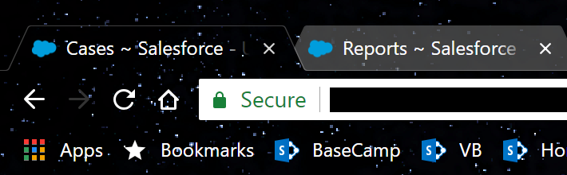

Make sure to use a case view with check boxes:
The case view tab should be the leftmost open tab and it must be active for the search to work:
Copy and paste case numbers directly from Excel or press Enter between entries if manually typing:
For more help or bug reports contact Shaun Jordan